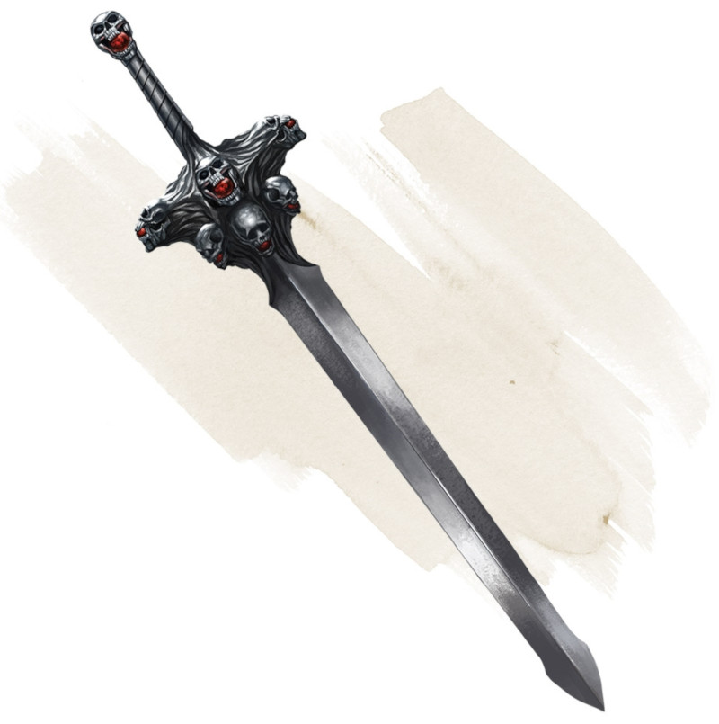

Nine Lives Stealer
Weapon (any sword), very rare (requires attunement)
You gain a +2 bonus to attack and damage rolls made with this magic weapon.
The sword has 1d8 + 1 charges. If you score a critical hit against a creature that has fewer than 100 hit points, it must succeed on a DC 15 Constitution saving throw or be slain instantly as the sword tears its life force from its body (a construct or an undead is immune). The sword loses 1 charge if the creature is slain. When the sword has no charges remaining, it loses this property.
The sword has 1d8 + 1 charges. If you score a critical hit against a creature that has fewer than 100 hit points, it must succeed on a DC 15 Constitution saving throw or be slain instantly as the sword tears its life force from its body (a construct or an undead is immune). The sword loses 1 charge if the creature is slain. When the sword has no charges remaining, it loses this property.
Dungeon Master´s Guide (SRD)
